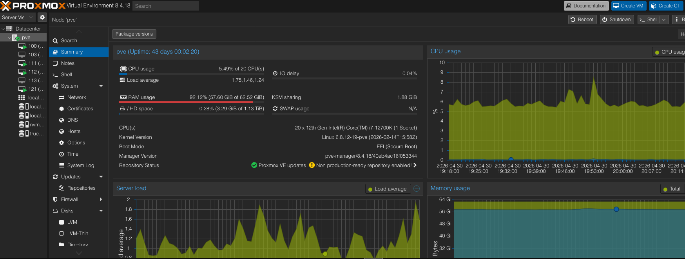
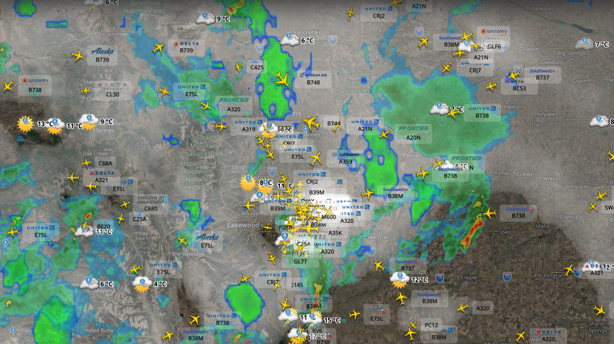
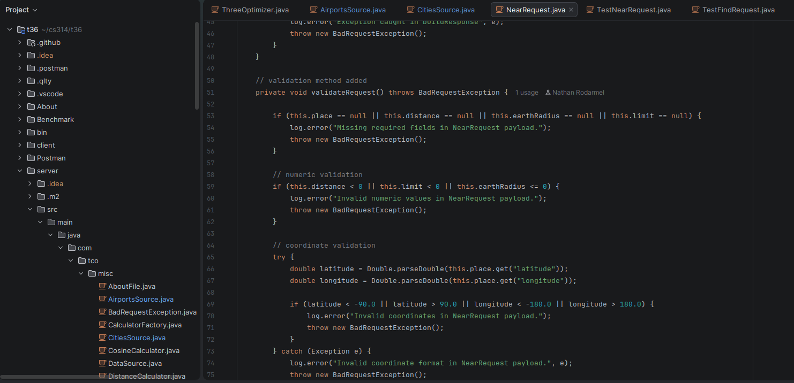

Home Lab
Home Lab
Built and manage a personal home lab using Proxmox VE, hosting multiple virtual machines for various IT projects and experimentation.
PROJECTS
A collection of academic and personal projects that demonstrate my interests in IT systems, networking, virtualization, and problem solving.

Built and manage a personal home lab using Proxmox VE, hosting multiple virtual machines for various IT projects and experimentation.

A personal interest spanning ADS-B flight tracking, UAV operations, and working toward a Private Pilot License.

Academic projects covering software development, systems, databases, networking, testing, and team-based problem solving.